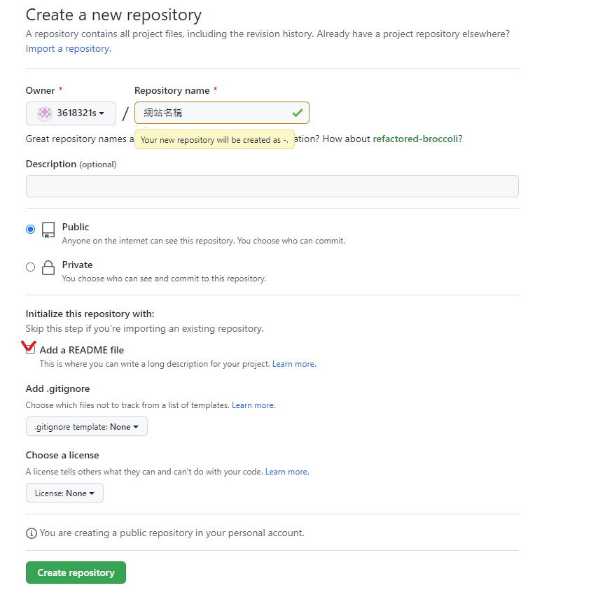
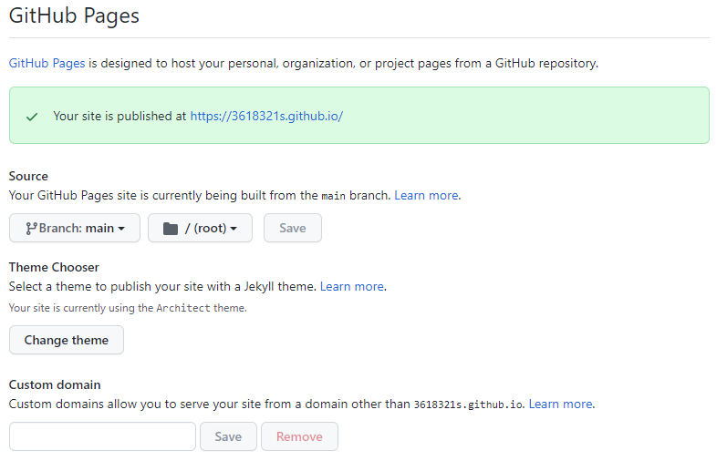
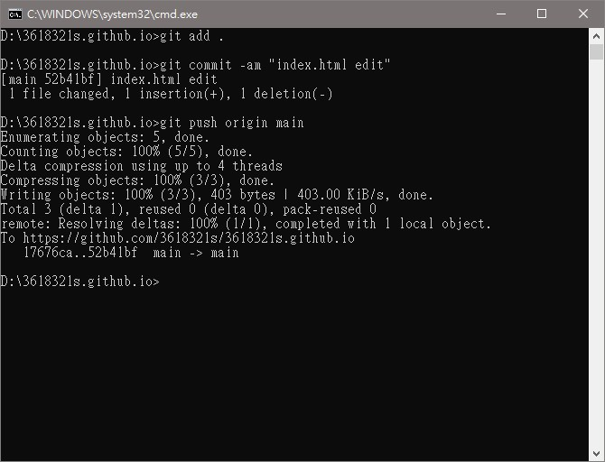
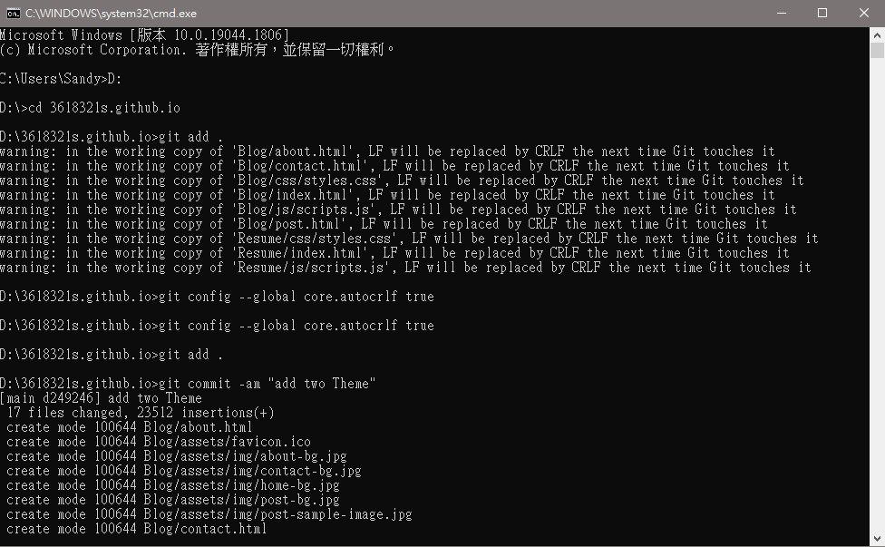

註冊GitHub
註冊相關資訊可上網搜尋
需特別注意事項
1.建立完帳號，接著創建屬於你的repository
2.Create repository name
3.把repository設定為 github page
git下載與安裝
請根據作業系統下載合適的版本，接著安裝。(安裝過程使用預設就好，皆按下一步完成安裝。)
git 指令介紹
檢查是否有git版本，打開命令提示字元，輸入以下指令。
git --version
當有顯示版本，代表git已成功完成安裝。
將建立好的 repo (你的 repo 網址)下載/複製到本地端指定目錄。
git clone https://github.com/帳號/repository_name
注意：在這之前選好資料下載到哪裡。
讓 github 知道你是誰
git config --global user.email "you@example.com"
git config --global user.name "Your Name"
git config --global user.name "Your Name"
git 提交流程
git add . //.是全部的意思 加入索引
git commit -am "註解" //可註解內容
git push origin main //將上述步驟推上去 github
git pull //把檔案抓下來本地端，確保與 github 上一致，每次修改都要 push 上去 pull 下來
git status //查看你的 repository 與 本地端 狀態一致與否
git log //看commit狀況 離開 按下Q鍵即可
git config --global core.autocrlf true //出現 LF will be replaced by CRLF 錯誤訊息使用
git config --global core.safecrlf true //出現 LF will be replaced by CRLF 錯誤訊息使用


git commit -am "註解" //可註解內容
git push origin main //將上述步驟推上去 github
git pull //把檔案抓下來本地端，確保與 github 上一致，每次修改都要 push 上去 pull 下來
git status //查看你的 repository 與 本地端 狀態一致與否
git log //看commit狀況 離開 按下Q鍵即可
git config --global core.autocrlf true //出現 LF will be replaced by CRLF 錯誤訊息使用
git config --global core.safecrlf true //出現 LF will be replaced by CRLF 錯誤訊息使用